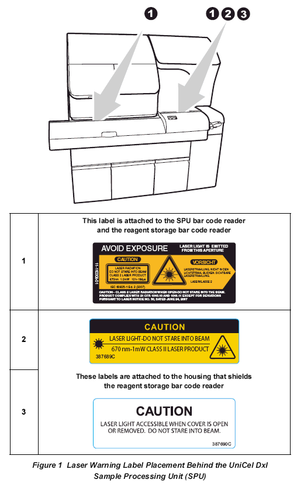
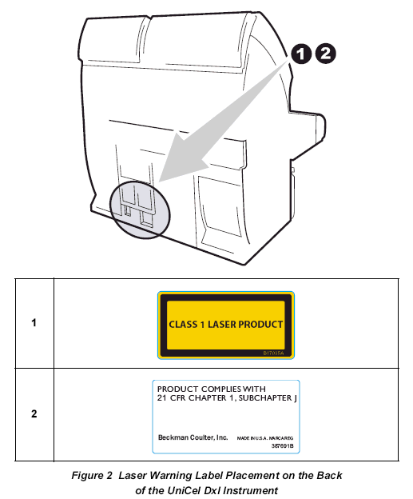

Safety
Purpose
This document provides safety information for service personnel and customers.
Latest Revision
Transfer from Lotus Notes to CCM.
Applicability
It is the responsibility of every person who performs service on any Immunoassay instrument/system to be fully aware of and abide by the safety rules established and presented in this document.
Location of Safety Documentation
Because of the volume of safety information that must be relayed to service personnel, all of the safety information is placed into this document and therefore does not need to be placed in every service document.
List of Safety Hazards for DxI
- Biological fluids
- Compressed air of up to 40 pounds per square inch
- Covers
- Laser light
- Power - AC
- Power - DC
- Module weight
- Moving an instrument
- Moving parts
- Strong magnets
Customer Safety
- leave an interlock bypass key with a customer.
- leave an interlock switch bypassed on any instrument when leaving an account.
- encourage a customer to operate instruments with any interlock bypassed.
Biological Fluids
Treat all parts within the DxI instrument as if they are contaminated with biological fluids. Wear the correct protective equipment including latex gloves, a lab coat, and eye protection when servicing an instrument.
Compressed Air
The compressed air system in the instrument could possibly cause injury. If an air supply tube came loose while under pressure, the air line could act like a whip and injure someone standing or working nearby. Always wear the correct safety equipment, including eye protection, whenever servicing the DxI instrument.
Covers
The two large covers that house the front of the instrument can be lifted to the up positions for servicing the instrument. When the covers are up, they pose a risk to personal safety. Because there is a limit to how high the covers can be raised, it is possible for service personnel to move their head or other body part and unexpectedly come in contact with a corner of one of the covers. Always be aware of the location of the covers, specifically the cover corners, when servicing the instrument.
Laser Light
Laser light is emitted from the two bar code readers in the instrument. Though the light power level is relatively low, never look directly into the light source in the bar code readers.


Power - AC
The instrument contains 240 V AC from the power cord plug into the instrument power supply.
Power - DC
DC power can be as high as 200 V DC. This voltage is dangerous, treat it with respect.
Module Weight Limits
- The reagent storage module (54 pounds)
- The sample presentation module (SPU) (51 pounds)
A service person should be able to lift or carry any of the modules in the instrument by themselves, except as listed above.
Moving An Instrument
The DxI instrument, though large and heavy, can be moved within a lab or from lab to lab because the unit is on casters. It is possible, though not recommended, for one person to move the instrument. Because all four casters on the instrument are swivel casters, it can be difficult to control instrument movement. It is much easier for two people to perform the move, one person controlling the direction of the leading end and one controlling the trailing end.
Moving Parts - Pinch Points
- Sample Presentation Unit - With the covers open and bypassed the rack pushers can cause personal injury.
- Sample Storage Module - Rotating sample storage wheel.
- Sample Pick and Place - X and Z motions
- Incubator Pick and Place - X and Z motions
- Wash Pick and Place - X and Z motions
- Reagent Pipettors - X and Z motions
- Carriage - X motions
- Bulk Feeder Module - Elevator and air cylinders.
- Analytical Module - Wash arm X and Z motions, incubator wheel rotation, wash carousel rotation, ejector plate, and air cylinder movement.
- Reagent Storage Module - X and Z motions of the gripper, and the gripper opening and closing.
Moving Parts - Wire Damage
- Wearing
- Chaffing
- Cuts
- Squashing
Any of these failures can cause a wire to short to ground or another voltage potential, resulting in smoke or in some circumstances fire. Always route wires and cables away from moving parts correctly, so that the wires and cables cannot come into contact with the moving pars. Place harnesses, wires, or cables in the cable clamps or harness clamps located nearby that are intended to secure them.
Strong Magnets
- Persons with medical devices or metal implants should not hold the wash arm side of the analytical module close to their body.
- Consult your physician or your medical device manual for more information.
- The magnetic field near the analytical module was measured:
- near the wash arm: 26.4 mT.
- one foot from the wash arm: 0.12 mT.